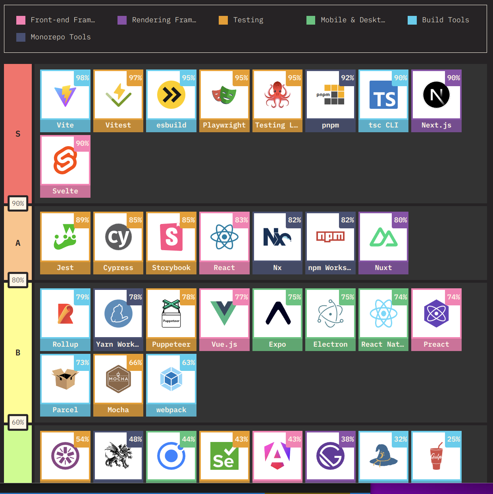
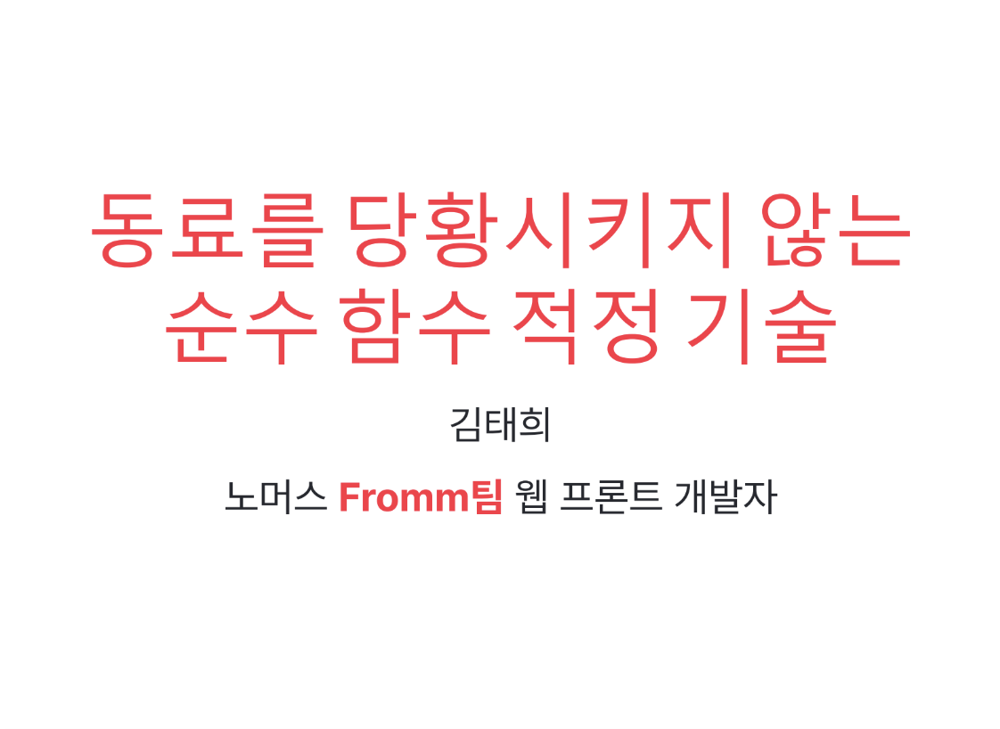
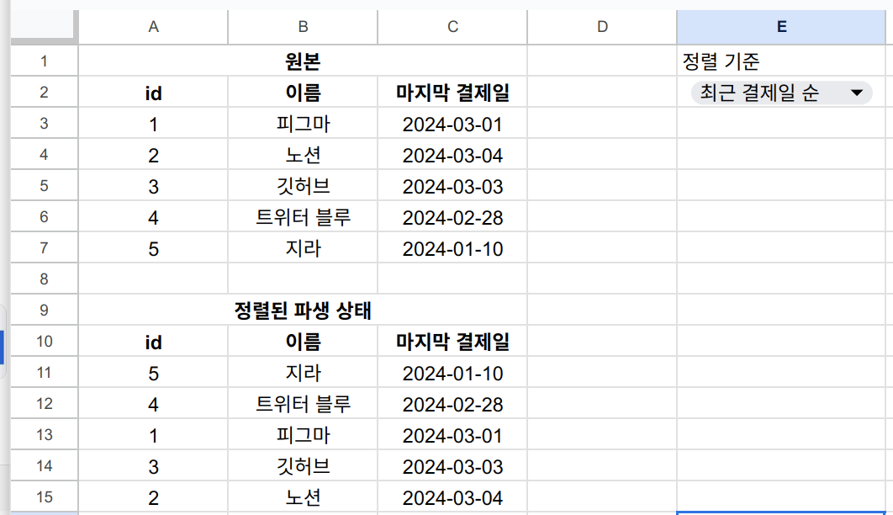
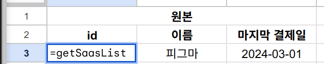
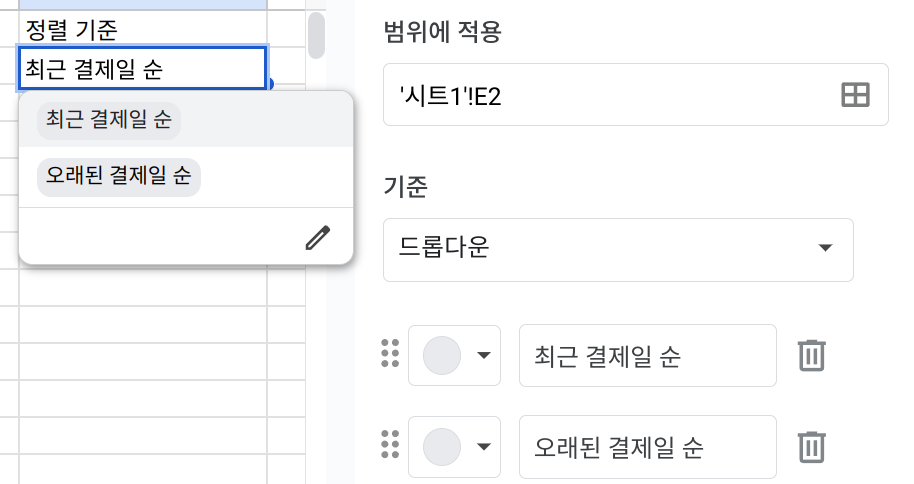
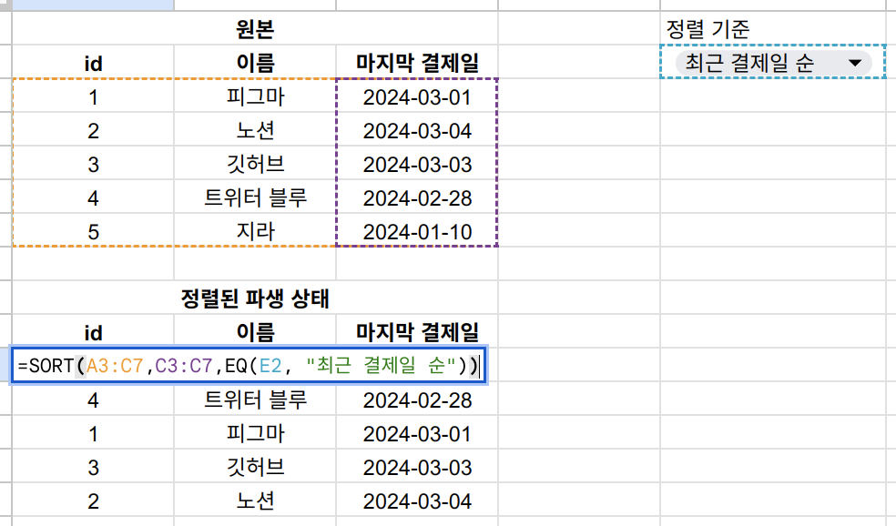
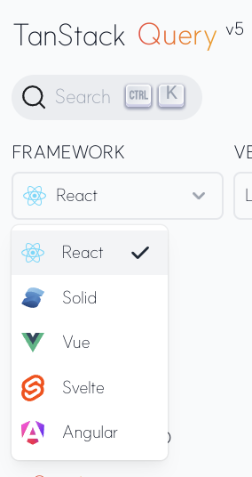

# <span class='text-excel'>EXCEL</span>로 돌아가자 <span class='text-clojure'>ClojureScript</span> Reagent에서<br/> <span class='text-tanstack'>TanStack Query</span>로 선언적 데이터 구독하기 <br/> 김태희(aka 탐정토끼) - [sherpas](https://www.sherpas.team/cb8961b8-6d70-4904-b45d-19f543032b62) --- ## 순서 - Clojure 세상에 오다 - 명령!적 상태 관리의 고통 - excel의 선언적 데이터 구독 - @tanstack/query 등장 - @query를 deref 하기 --- ## <span class='text-clojure'>Clojure 세상에 오다</span> 프론트 개발자가 된지 4년 째. 시작부터 지금까지 <span class='text-typescript'>TypeScript</span>만 써왔다. 급변하는 프론트 생태계 속에서...  --- 순수 함수 적정기술을 추구하던 중... <img src='https://upload.cafenono.com/image/slashpageHome/20231218/112732_2XaJGVgxeSRLflFvP2?q=75&s=720x1&t=outside&f=webp' style='height: 250px;' />  --- LIFT IO 발표를 준비하다가 갑자기 셀파스 꿈을 꾸었고  (이 사람은 그린랩스 꿈을 꾸고, 두 번 떨어진 적이 있다) --- ### 셀파스에서 <span class='text-clojure'>클로저</span>를 하게 되었습니다. <div class='h-stack'> <div class='pre'> (-> 탐토 (발표) (회식) (명함) (어른의 사정) (커피챗) (면접) (AdventOfCode) (셀파스 입사)) </div> <div> <img src='/clojure-onboarding.png' alt='깃허브에서 advent of code 문제를 풀며 온보딩 중인 사진. 클로저 코드로 문제를 풀고 리뷰를 받고 있다'/> </div> </div> --- <p class='hero-center'> <span class='text-clojure'>순수함수</span>로 가득한<br/>천국이 펼쳐질 줄 알았죠. \- 김모씨 </p> --- <p class='hero-center'> 하지만 모리안,<br/> 그곳에도 낙원은 없었어 \- 모 온라인 게임 트레일러 </p> --- ## <span class='text-imperative!'>명령!적 상태 관리의 고통</span> <p class='hero-center'> 리액트는 함수형인데<br/> 왜 effect로 고통 받을까 </p> --- ```clojure ;; 상태 정의 (def main-state (r/atom {:sass-list {:data nil :is-loading false} ;; 서버 상태 :sorting :ASC})) ;; 클라이언트 상태 ;; http 요청 정의 (defn get-sass-list! [{:keys [on-success on-error]}] (req! {:method :get :endpoint "/sass-list" :on-success on-success :on-error on-error})) ``` --- ```clojure ;; 클래스 컴포넌트 (r/create-class ;; 마운트 된 후 {:component-did-mount (fn [this] (swap! main-state assoc :sass-list {:is-loading true :data nil}) (http/get-sass-list! {:on-success (fn [res] (swap! main-state assoc :sass-list {:is-loading false :data (->> (-> res :body :sass-list) ;; 클라이언트에서 정렬 (sort-by (:sorting (@main-state))))})) :on-error (fn [] (swap! main-state assoc :sass-list {:is-loading false :data nil}))})) ;; ... }) ``` --- ```clojure { ;; ... :render (fn [this] (let [{:keys [saas-list-data]} @main-state] [:div (when (not (:loading saas-list-data)) [saas-list {:saas-list (:data saas-list-data)}]) [:button {:on-click (fn [] ;; 정렬 순서 바꾸기 (swap! main-state assoc :sorting :DESC) (swap! main-state update-in [:sass-list :data] #(sort-by :DESC %)) )} "최근 결제 순"]])) ;; ... } ``` --- <p class='hero-center'> 귀찮음을 넘어서...<br/> <br/> <span class='text-imperative!'>부수효과!</span>로 가득한 게 문제 </p> --- ### <span class='text-imperative!'>동기화!</span>의 고통 데이터 새로고침 기능을 만들어봅시다. ```clojure [:button {:on-click (fn [] ;; 데이터 새로 불러오기 (http/get-sass-list! {:on-success (fn [res] (swap! main-state update-in [:sass-list :data] (-> res :body :sass-list))) :on-error (fn [] ;;... )}))} "새로고침"] ``` --- 엥? 왜 정렬이 안 되어 있죠? -> sort를 빼먹으셨네요. ```clojure [:button {:on-click (fn [] ;; 데이터 새로 불러오기 (http/get-sass-list! {:on-success (fn [res] (swap! main-state update-in [:sass-list :data] (->> (-> res :body :sass-list) ;; 클라이언트에서 정렬 (sort-by (:sorting (@main-state)))))) :on-error (fn [] ;;... )}))} "새로고침"] ``` --- ### 왜 <span class='text-imperative!'>상태 변경!</span>을 매번 신경써야할까? <svg xmlns="http://www.w3.org/2000/svg" direction="ltr" width="500" height="600" viewBox="226.74 -47.93331718444824 657.52 746.66" stroke-linecap="round" stroke-linejoin="round" style="background-color: rgb(249, 250, 251);"><g transform="matrix(1, 0, 0, 1, 655.28, 415.71)" opacity="1"><g><path d="M0, 0L193.69, 0,193.69, 150.8,0, 150.8Z" stroke-width="3.5" stroke="#e03131" fill="none"/><g><text font-size="22px" font-family="'tldraw_draw', sans-serif" font-style="normal" font-weight="normal" line-height="29.700000000000003px" dominant-baseline="mathematical" alignment-baseline="mathematical" stroke-width="2" fill="rgb(249, 250, 251)" stroke="rgb(249, 250, 251)"><tspan alignment-baseline="mathematical" x="42.64444541931152px" y="41.15555468201637px">사용자</tspan><tspan alignment-baseline="mathematical" x="103.33333587646484px" y="41.15555468201637px"> </tspan><tspan alignment-baseline="mathematical" x="110.86666870117188px" y="41.15555468201637px">상태</tspan><tspan alignment-baseline="mathematical" x="151.34445190429688px" y="41.15555468201637px"> </tspan><tspan alignment-baseline="mathematical" x="16px" y="70.85555550456047px"> </tspan><tspan alignment-baseline="mathematical" x="93.22222137451172px" y="70.85555550456047px"> </tspan><tspan alignment-baseline="mathematical" x="16px" y="100.55555436015129px"> </tspan><tspan alignment-baseline="mathematical" x="28.766667366027832px" y="100.55555436015129px">최근</tspan><tspan alignment-baseline="mathematical" x="69.22222518920898px" y="100.55555436015129px"> </tspan><tspan alignment-baseline="mathematical" x="76.76666641235352px" y="100.55555436015129px">결제일</tspan><tspan alignment-baseline="mathematical" x="137.45555877685547px" y="100.55555436015129px"> </tspan><tspan alignment-baseline="mathematical" x="145px" y="100.55555436015129px">순</tspan></text><text font-size="22px" font-family="'tldraw_draw', sans-serif" font-style="normal" font-weight="normal" line-height="29.700000000000003px" dominant-baseline="mathematical" alignment-baseline="mathematical" fill="#1d1d1d" stroke="none"><tspan alignment-baseline="mathematical" x="42.64444541931152px" y="41.15555468201637px">사용자</tspan><tspan alignment-baseline="mathematical" x="103.33333587646484px" y="41.15555468201637px"> </tspan><tspan alignment-baseline="mathematical" x="110.86666870117188px" y="41.15555468201637px">상태</tspan><tspan alignment-baseline="mathematical" x="151.34445190429688px" y="41.15555468201637px"> </tspan><tspan alignment-baseline="mathematical" x="16px" y="70.85555550456047px"> </tspan><tspan alignment-baseline="mathematical" x="93.22222137451172px" y="70.85555550456047px"> </tspan><tspan alignment-baseline="mathematical" x="16px" y="100.55555436015129px"> </tspan><tspan alignment-baseline="mathematical" x="28.766667366027832px" y="100.55555436015129px">최근</tspan><tspan alignment-baseline="mathematical" x="69.22222518920898px" y="100.55555436015129px"> </tspan><tspan alignment-baseline="mathematical" x="76.76666641235352px" y="100.55555436015129px">결제일</tspan><tspan alignment-baseline="mathematical" x="137.45555877685547px" y="100.55555436015129px"> </tspan><tspan alignment-baseline="mathematical" x="145px" y="100.55555436015129px">순</tspan></text></g></g></g><g transform="matrix(1, 0, 0, 1, 643.2, 498.2)" opacity="1"><g><defs><mask id="shape_T8QTQ7cBEv9_hrfNe9Mom_clip"><rect x="-207.37777709960938" y="-169.68890380859375" width="319.46" height="275.01" fill="white"/><path d="M -102.46856535207897 -60.40722077059307 L -107.37777709960938 -69.68890380859375 L -96.88499792506046 -69.29956437551174" fill="none" stroke="none"/><rect x="-60.84447002410889" y="-49.931924608488" width="26.39" height="35.5" fill="black"/></mask></defs><g mask="url(#shape_T8QTQ7cBEv9_hrfNe9Mom_clip)"><rect x="-100" y="-100" width="319.46" height="275.01" fill="transparent" stroke="none"/><path d="M12.088836669921875,5.325054591617743L-107.37777709960938,-69.68890380859375" fill="none" stroke="#40c057" stroke-width="3.5" stroke-dasharray="none" stroke-dashoffset="none"/></g><path d="M -102.46856535207897 -60.40722077059307 L -107.37777709960938 -69.68890380859375 L -96.88499792506046 -69.29956437551174" fill="none" stroke="#40c057" stroke-width="3.5"/><text font-size="20px" font-family="'tldraw_draw', sans-serif" font-style="normal" font-weight="normal" line-height="27px" dominant-baseline="mathematical" alignment-baseline="mathematical" fill="rgb(249, 250, 251)" stroke-width="2" stroke="rgb(249, 250, 251)"><tspan alignment-baseline="mathematical" x="-56.30002558231354px" y="-36.15414699627868px">@</tspan></text><text font-size="20px" font-family="'tldraw_draw', sans-serif" font-style="normal" font-weight="normal" line-height="27px" dominant-baseline="mathematical" alignment-baseline="mathematical" fill="#1d1d1d"><tspan alignment-baseline="mathematical" x="-56.30002558231354px" y="-36.15414699627868px">@</tspan></text></g></g><g transform="matrix(1, 0, 0, 1, 402.13, 429.93)" opacity="1"><g><defs><mask id="shape_CjEKzvV4SVuS04WRUfZyS_clip"><rect x="-92.88888549804688" y="-229.4222412109375" width="434.06" height="321.76" fill="white"/><path d="M 235.53 -16.510487138527505 L 241.17 -7.656438121572191 L 230.68 -7.195532392821178" fill="none" stroke="none"/><rect x="89.72" y="-86.28933966625485" width="68.83" height="35.5" fill="black"/></mask></defs><g mask="url(#shape_CjEKzvV4SVuS04WRUfZyS_clip)"><rect x="-100" y="-100" width="434.06" height="321.76" fill="transparent" stroke="none"/><path d="M7.111114501953125,-129.4222412109375L241.17913193199922,-7.656438121572191" fill="none" stroke="#e03131" stroke-width="3.5" stroke-dasharray="none" stroke-dashoffset="none"/></g><path d="M 235.53 -16.510487138527505 L 241.17 -7.656438121572191 L 230.68 -7.195532392821178" fill="none" stroke="#e03131" stroke-width="3.5"/><text font-size="20px" font-family="'tldraw_draw', sans-serif" font-style="normal" font-weight="normal" line-height="27px" dominant-baseline="mathematical" alignment-baseline="mathematical" fill="rgb(249, 250, 251)" stroke-width="2" stroke="rgb(249, 250, 251)"><tspan alignment-baseline="mathematical" x="94.06178862201119px" y="-72.51156205404553px">swap!</tspan></text><text font-size="20px" font-family="'tldraw_draw', sans-serif" font-style="normal" font-weight="normal" line-height="27px" dominant-baseline="mathematical" alignment-baseline="mathematical" fill="#1d1d1d"><tspan alignment-baseline="mathematical" x="94.06178862201119px" y="-72.51156205404553px">swap!</tspan></text></g></g><g transform="matrix(1, 0, 0, 1, 657.42, 455.53)" opacity="1"><g><defs><mask id="shape_PBshsjANe8rZ2PagpIbJw_clip"><rect x="-247.91110229492188" y="-313.3333435058594" width="369.12" height="373.51" fill="white"/><path d="M -145.32347991130194 -203.15718458415472 L -147.91110229492188 -213.33334350585938 L -137.80447896396802 -210.48621076462314" fill="none" stroke="none"/><rect x="-76.54749527492595" y="-144.32777404785156" width="26.39" height="35.5" fill="black"/></mask></defs><g mask="url(#shape_PBshsjANe8rZ2PagpIbJw_clip)"><rect x="-100" y="-100" width="369.12" height="373.51" fill="transparent" stroke="none"/><path d="M21.21611136360025,-39.82220458984375L-147.91110229492188,-213.33334350585938" fill="none" stroke="#40c057" stroke-width="3.5" stroke-dasharray="none" stroke-dashoffset="none"/></g><path d="M -145.32347991130194 -203.15718458415472 L -147.91110229492188 -213.33334350585938 L -137.80447896396802 -210.48621076462314" fill="none" stroke="#40c057" stroke-width="3.5"/><text font-size="20px" font-family="'tldraw_draw', sans-serif" font-style="normal" font-weight="normal" line-height="27px" dominant-baseline="mathematical" alignment-baseline="mathematical" fill="rgb(249, 250, 251)" stroke-width="2" stroke="rgb(249, 250, 251)"><tspan alignment-baseline="mathematical" x="-72.0030508331306px" y="-130.54999643564224px">@</tspan></text><text font-size="20px" font-family="'tldraw_draw', sans-serif" font-style="normal" font-weight="normal" line-height="27px" dominant-baseline="mathematical" alignment-baseline="mathematical" fill="#1d1d1d"><tspan alignment-baseline="mathematical" x="-72.0030508331306px" y="-130.54999643564224px">@</tspan></text></g></g><g transform="matrix(1, 0, 0, 1, 650.31, 195.97)" opacity="1"><g><path d="M0, 0L192, 0,192, 162.13,0, 162.13Z" stroke-width="3.5" stroke="#e03131" fill="none"/><g><text font-size="22px" font-family="'tldraw_draw', sans-serif" font-style="normal" font-weight="normal" line-height="29.700000000000003px" dominant-baseline="mathematical" alignment-baseline="mathematical" stroke-width="2" fill="rgb(249, 250, 251)" stroke="rgb(249, 250, 251)"><tspan alignment-baseline="mathematical" x="17.644444465637207px" y="47.15555468201637px">계산한</tspan><tspan alignment-baseline="mathematical" x="78.33333587646484px" y="47.15555468201637px"> </tspan><tspan alignment-baseline="mathematical" x="85.86666870117188px" y="47.15555468201637px">파생</tspan><tspan alignment-baseline="mathematical" x="126.33333587646484px" y="47.15555468201637px"> </tspan><tspan alignment-baseline="mathematical" x="133.87777709960938px" y="47.15555468201637px">상태</tspan><tspan alignment-baseline="mathematical" x="174.34445190429688px" y="47.15555468201637px"> </tspan><tspan alignment-baseline="mathematical" x="16px" y="76.85555550456047px"> </tspan><tspan alignment-baseline="mathematical" x="92.22222137451172px" y="76.85555550456047px"> </tspan><tspan alignment-baseline="mathematical" x="16px" y="106.55555436015129px"> </tspan><tspan alignment-baseline="mathematical" x="41.64444541931152px" y="106.55555436015129px">정렬된</tspan><tspan alignment-baseline="mathematical" x="102.33333587646484px" y="106.55555436015129px"> </tspan><tspan alignment-baseline="mathematical" x="109.86666870117188px" y="106.55555436015129px">목록</tspan></text><text font-size="22px" font-family="'tldraw_draw', sans-serif" font-style="normal" font-weight="normal" line-height="29.700000000000003px" dominant-baseline="mathematical" alignment-baseline="mathematical" fill="#1d1d1d" stroke="none"><tspan alignment-baseline="mathematical" x="17.644444465637207px" y="47.15555468201637px">계산한</tspan><tspan alignment-baseline="mathematical" x="78.33333587646484px" y="47.15555468201637px"> </tspan><tspan alignment-baseline="mathematical" x="85.86666870117188px" y="47.15555468201637px">파생</tspan><tspan alignment-baseline="mathematical" x="126.33333587646484px" y="47.15555468201637px"> </tspan><tspan alignment-baseline="mathematical" x="133.87777709960938px" y="47.15555468201637px">상태</tspan><tspan alignment-baseline="mathematical" x="174.34445190429688px" y="47.15555468201637px"> </tspan><tspan alignment-baseline="mathematical" x="16px" y="76.85555550456047px"> </tspan><tspan alignment-baseline="mathematical" x="92.22222137451172px" y="76.85555550456047px"> </tspan><tspan alignment-baseline="mathematical" x="16px" y="106.55555436015129px"> </tspan><tspan alignment-baseline="mathematical" x="41.64444541931152px" y="106.55555436015129px">정렬된</tspan><tspan alignment-baseline="mathematical" x="102.33333587646484px" y="106.55555436015129px"> </tspan><tspan alignment-baseline="mathematical" x="109.86666870117188px" y="106.55555436015129px">목록</tspan></text></g></g></g><g transform="matrix(1, 0, 0, 1, 403.55, 501.75)" opacity="1"><g><defs><mask id="shape_ETb2Lr0ZFbomJWJL1l8zS_clip"><rect x="-102.13333129882812" y="-259.5974898911413" width="437.10" height="332.57" fill="white"/><path d="M 224.47 -159.74202251756464 L 234.97 -159.59748989114132 L 229.59 -150.57735098131522" fill="none" stroke="none"/><rect x="82.00" y="-111.05985334400816" width="68.83" height="35.5" fill="black"/></mask></defs><g mask="url(#shape_ETb2Lr0ZFbomJWJL1l8zS_clip)"><rect x="-100" y="-100" width="437.10" height="332.57" fill="transparent" stroke="none"/><path d="M-2.133331298828125,-27.022216796875L234.97238982239475,-159.59748989114132" fill="none" stroke="#e03131" stroke-width="3.5" stroke-dasharray="none" stroke-dashoffset="none"/></g><path d="M 224.47 -159.74202251756464 L 234.97 -159.59748989114132 L 229.59 -150.57735098131522" fill="none" stroke="#e03131" stroke-width="3.5"/><text font-size="20px" font-family="'tldraw_draw', sans-serif" font-style="normal" font-weight="normal" line-height="27px" dominant-baseline="mathematical" alignment-baseline="mathematical" fill="rgb(249, 250, 251)" stroke-width="2" stroke="rgb(249, 250, 251)"><tspan alignment-baseline="mathematical" x="86.33619466681833px" y="-97.28207573179884px">swap!</tspan></text><text font-size="20px" font-family="'tldraw_draw', sans-serif" font-style="normal" font-weight="normal" line-height="27px" dominant-baseline="mathematical" alignment-baseline="mathematical" fill="#1d1d1d"><tspan alignment-baseline="mathematical" x="86.33619466681833px" y="-97.28207573179884px">swap!</tspan></text></g></g><g transform="matrix(1, 0, 0, 1, 403.55, 240.06)" opacity="1"><g><defs><mask id="shape_O_SmG5jpzqMyh2uyH1pEI_clip"><rect x="-100" y="-105.79926961254475" width="433.25" height="205.79" fill="white"/><path d="M 224.03 -10.821642157737095 L 233.25 -5.799269612544749 L 224.29 -0.3248857418779165" fill="none" stroke="none"/><rect x="82.21" y="-20.649634806272374" width="68.83" height="35.5" fill="black"/></mask></defs><g mask="url(#shape_O_SmG5jpzqMyh2uyH1pEI_clip)"><rect x="-100" y="-100" width="433.25" height="205.79" fill="transparent" stroke="none"/><path d="M0,0L233.25970926289645,-5.799269612544749" fill="none" stroke="#e03131" stroke-width="3.5" stroke-dasharray="none" stroke-dashoffset="none"/></g><path d="M 224.03 -10.821642157737095 L 233.25 -5.799269612544749 L 224.29 -0.3248857418779165" fill="none" stroke="#e03131" stroke-width="3.5"/><text font-size="20px" font-family="'tldraw_draw', sans-serif" font-style="normal" font-weight="normal" line-height="27px" dominant-baseline="mathematical" alignment-baseline="mathematical" fill="rgb(249, 250, 251)" stroke-width="2" stroke="rgb(249, 250, 251)"><tspan alignment-baseline="mathematical" x="86.54652003648324px" y="-6.871857194063054px">swap!</tspan></text><text font-size="20px" font-family="'tldraw_draw', sans-serif" font-style="normal" font-weight="normal" line-height="27px" dominant-baseline="mathematical" alignment-baseline="mathematical" fill="#1d1d1d"><tspan alignment-baseline="mathematical" x="86.54652003648324px" y="-6.871857194063054px">swap!</tspan></text></g></g><g transform="matrix(1, 0, 0, 1, 404.97, 141.93)" opacity="1"><g><defs><mask id="shape_aAIPZ-7JWsSYzyUOqjLAf_clip"><rect x="-100.00000000000003" y="-100" width="200.00" height="724.80" fill="white"/><path d="M 5.24 515.70 L -2.2648549702353193e-14 524.80 L -5.250000000000021 515.70" fill="none" stroke="none"/></mask></defs><g mask="url(#shape_aAIPZ-7JWsSYzyUOqjLAf_clip)"><rect x="-100" y="-100" width="200.00" height="724.80" fill="transparent" stroke="none"/><path d="M0,0L-2.2648549702353193e-14,524.8020065237159" fill="none" stroke="#e03131" stroke-width="3.5" stroke-dasharray="none" stroke-dashoffset="none"/></g><path d="M 5.24 515.70 L -2.2648549702353193e-14 524.80 L -5.250000000000021 515.70" fill="none" stroke="#e03131" stroke-width="3.5"/></g></g><g transform="matrix(1, 0, 0, 1, 684.44, 70.11)" opacity="1"><g><defs><mask id="shape_UJ1ikAnUJd6V6OWxhZhlk_clip"><rect x="-381.433619668209" y="-100" width="481.43" height="362.48" fill="white"/><path d="M -270.933619668209 162.48 L -281.433619668209 162.48 L -276.183619668209 153.39" fill="none" stroke="none"/><rect x="-199.86125716076467" y="63.49" width="118.28" height="35.5" fill="black"/></mask></defs><g mask="url(#shape_UJ1ikAnUJd6V6OWxhZhlk_clip)"><rect x="-100" y="-100" width="481.43" height="362.48" fill="transparent" stroke="none"/><path d="M0,0L-281.433619668209,162.48577607445102" fill="none" stroke="#e03131" stroke-width="3.5" stroke-dasharray="none" stroke-dashoffset="none"/></g><path d="M -270.933619668209 162.48 L -281.433619668209 162.48 L -276.183619668209 153.39" fill="none" stroke="#e03131" stroke-width="3.5"/><text font-size="20px" font-family="'tldraw_draw', sans-serif" font-style="normal" font-weight="normal" line-height="27px" dominant-baseline="mathematical" alignment-baseline="mathematical" fill="rgb(249, 250, 251)" stroke-width="2" stroke="rgb(249, 250, 251)"><tspan alignment-baseline="mathematical" x="-195.2612571369228px" y="77.27066564943483px">on-success</tspan></text><text font-size="20px" font-family="'tldraw_draw', sans-serif" font-style="normal" font-weight="normal" line-height="27px" dominant-baseline="mathematical" alignment-baseline="mathematical" fill="#1d1d1d"><tspan alignment-baseline="mathematical" x="-195.2612571369228px" y="77.27066564943483px">on-success</tspan></text></g></g><g transform="matrix(1, 0, 0, 1, 400, 156.86)" opacity="1"><g><defs><mask id="shape_usPXu_6jSNxysrXxGPqhn_clip"><rect x="-100" y="-249.00833055851072" width="458.08" height="349.00" fill="white"/><path d="M 247.58 -149.00833055851072 L 258.08 -149.00833055851072 L 252.83 -139.91506381877412" fill="none" stroke="none"/><rect x="104.75" y="-92.25416527925536" width="48.57" height="35.5" fill="black"/></mask></defs><g mask="url(#shape_usPXu_6jSNxysrXxGPqhn_clip)"><rect x="-100" y="-100" width="458.08" height="349.00" fill="transparent" stroke="none"/><path d="M0,0L258.08999927835856,-149.00833055851072" fill="none" stroke="#e03131" stroke-width="3.5" stroke-dasharray="none" stroke-dashoffset="none"/></g><path d="M 247.58 -149.00833055851072 L 258.08 -149.00833055851072 L 252.83 -139.91506381877412" fill="none" stroke="#e03131" stroke-width="3.5"/><text font-size="20px" font-family="'tldraw_draw', sans-serif" font-style="normal" font-weight="normal" line-height="27px" dominant-baseline="mathematical" alignment-baseline="mathematical" fill="rgb(249, 250, 251)" stroke-width="2" stroke="rgb(249, 250, 251)"><tspan alignment-baseline="mathematical" x="109.21166626610952px" y="-78.47638766704604px">req!</tspan></text><text font-size="20px" font-family="'tldraw_draw', sans-serif" font-style="normal" font-weight="normal" line-height="27px" dominant-baseline="mathematical" alignment-baseline="mathematical" fill="#1d1d1d"><tspan alignment-baseline="mathematical" x="109.21166626610952px" y="-78.47638766704604px">req!</tspan></text></g></g><g transform="matrix(1, 0, 0, 1, 651.02, -15.9333)" opacity="1"><g><path d="M0, 0L201.24, 0,201.24, 128.71,0, 128.71Z" stroke-width="3.5" stroke="#e03131" fill="none"/><g><text font-size="22px" font-family="'tldraw_draw', sans-serif" font-style="normal" font-weight="normal" line-height="29.700000000000003px" dominant-baseline="mathematical" alignment-baseline="mathematical" stroke-width="2" fill="rgb(249, 250, 251)" stroke="rgb(249, 250, 251)"><tspan alignment-baseline="mathematical" x="46.64444541931152px" y="59.85555547475815px">외부</tspan><tspan alignment-baseline="mathematical" x="87.0999984741211px" y="59.85555547475815px"> </tspan><tspan alignment-baseline="mathematical" x="94.64444732666016px" y="59.85555547475815px">데이터</tspan></text><text font-size="22px" font-family="'tldraw_draw', sans-serif" font-style="normal" font-weight="normal" line-height="29.700000000000003px" dominant-baseline="mathematical" alignment-baseline="mathematical" fill="#1d1d1d" stroke="none"><tspan alignment-baseline="mathematical" x="46.64444541931152px" y="59.85555547475815px">외부</tspan><tspan alignment-baseline="mathematical" x="87.0999984741211px" y="59.85555547475815px"> </tspan><tspan alignment-baseline="mathematical" x="94.64444732666016px" y="59.85555547475815px">데이터</tspan></text></g></g></g><g transform="matrix(1, 0, 0, 1, 398.57, 590.64)" opacity="1"><g><defs><mask id="shape_iYWrKkI7TmbexfI0Vas7e_clip"><rect x="-100" y="-332.5333251953125" width="485.86" height="432.53" fill="white"/><path d="M 275.49 -230.86795413195009 L 285.86 -232.5333251953125 L 282.12 -222.72247702220037" fill="none" stroke="none"/><rect x="108.51" y="-134.01666259765625" width="68.83" height="35.5" fill="black"/></mask></defs><g mask="url(#shape_iYWrKkI7TmbexfI0Vas7e_clip)"><rect x="-100" y="-100" width="485.86" height="432.53" fill="transparent" stroke="none"/><path d="M0,0L285.8666687011719,-232.5333251953125" fill="none" stroke="#e03131" stroke-width="3.5" stroke-dasharray="none" stroke-dashoffset="none"/></g><path d="M 275.49 -230.86795413195009 L 285.86 -232.5333251953125 L 282.12 -222.72247702220037" fill="none" stroke="#e03131" stroke-width="3.5"/><text font-size="20px" font-family="'tldraw_draw', sans-serif" font-style="normal" font-weight="normal" line-height="27px" dominant-baseline="mathematical" alignment-baseline="mathematical" fill="rgb(249, 250, 251)" stroke-width="2" stroke="rgb(249, 250, 251)"><tspan alignment-baseline="mathematical" x="112.84999975562096px" y="-120.23888498544693px">swap!</tspan></text><text font-size="20px" font-family="'tldraw_draw', sans-serif" font-style="normal" font-weight="normal" line-height="27px" dominant-baseline="mathematical" alignment-baseline="mathematical" fill="#1d1d1d"><tspan alignment-baseline="mathematical" x="112.84999975562096px" y="-120.23888498544693px">swap!</tspan></text></g></g><g transform="matrix(1, 0, 0, 1, 270.83, 198.82) scale(0.9804907280880706, 0.98)" opacity="1"><g><text font-size="24px" font-family="'tldraw_draw', sans-serif" font-style="normal" font-weight="normal" line-height="32.400000000000006px" dominant-baseline="mathematical" alignment-baseline="mathematical" stroke="rgb(249, 250, 251)" stroke-width="2px" fill="rgb(249, 250, 251)"><tspan alignment-baseline="mathematical" x="8.177778244018555px" y="12.299999237060547px">처음</tspan><tspan alignment-baseline="mathematical" x="52.333335876464844px" y="12.299999237060547px"> </tspan><tspan alignment-baseline="mathematical" x="60.56666946411133px" y="12.299999237060547px">데이터</tspan><tspan alignment-baseline="mathematical" x="126.81111145019531px" y="12.299999237060547px"> </tspan><tspan alignment-baseline="mathematical" x="0px" y="44.70000076293945px"> </tspan><tspan alignment-baseline="mathematical" x="23.33333396911621px" y="44.70000076293945px">가져오기</tspan></text><text font-size="24px" font-family="'tldraw_draw', sans-serif" font-style="normal" font-weight="normal" line-height="32.400000000000006px" dominant-baseline="mathematical" alignment-baseline="mathematical" stroke="none" stroke-width="2px" fill="#e03131"><tspan alignment-baseline="mathematical" x="8.177778244018555px" y="12.299999237060547px">처음</tspan><tspan alignment-baseline="mathematical" x="52.333335876464844px" y="12.299999237060547px"> </tspan><tspan alignment-baseline="mathematical" x="60.56666946411133px" y="12.299999237060547px">데이터</tspan><tspan alignment-baseline="mathematical" x="126.81111145019531px" y="12.299999237060547px"> </tspan><tspan alignment-baseline="mathematical" x="0px" y="44.70000076293945px"> </tspan><tspan alignment-baseline="mathematical" x="23.33333396911621px" y="44.70000076293945px">가져오기</tspan></text></g></g><g transform="matrix(1, 0, 0, 1, 271.54, 368.06) scale(0.9804907280880706, 0.98)" opacity="1"><g><text font-size="24px" font-family="'tldraw_draw', sans-serif" font-style="normal" font-weight="normal" line-height="32.400000000000006px" dominant-baseline="mathematical" alignment-baseline="mathematical" stroke="rgb(249, 250, 251)" stroke-width="2px" fill="rgb(249, 250, 251)"><tspan alignment-baseline="mathematical" x="8.177778244018555px" y="12.5px">정렬</tspan><tspan alignment-baseline="mathematical" x="52.333335876464844px" y="12.5px"> </tspan><tspan alignment-baseline="mathematical" x="60.56666946411133px" y="12.5px">바꾸기</tspan></text><text font-size="24px" font-family="'tldraw_draw', sans-serif" font-style="normal" font-weight="normal" line-height="32.400000000000006px" dominant-baseline="mathematical" alignment-baseline="mathematical" stroke="none" stroke-width="2px" fill="#e03131"><tspan alignment-baseline="mathematical" x="8.177778244018555px" y="12.5px">정렬</tspan><tspan alignment-baseline="mathematical" x="52.333335876464844px" y="12.5px"> </tspan><tspan alignment-baseline="mathematical" x="60.56666946411133px" y="12.5px">바꾸기</tspan></text></g></g><g transform="matrix(1, 0, 0, 1, 258.74, 572.15) scale(0.9804907280880706, 0.98)" opacity="1"><g><text font-size="24px" font-family="'tldraw_draw', sans-serif" font-style="normal" font-weight="normal" line-height="32.400000000000006px" dominant-baseline="mathematical" alignment-baseline="mathematical" stroke="rgb(249, 250, 251)" stroke-width="2px" fill="rgb(249, 250, 251)"><tspan alignment-baseline="mathematical" x="23.33333396911621px" y="12.5px">새로고침</tspan></text><text font-size="24px" font-family="'tldraw_draw', sans-serif" font-style="normal" font-weight="normal" line-height="32.400000000000006px" dominant-baseline="mathematical" alignment-baseline="mathematical" stroke="none" stroke-width="2px" fill="#e03131"><tspan alignment-baseline="mathematical" x="23.33333396911621px" y="12.5px">새로고침</tspan></text></g></g><g transform="matrix(1, 0, 0, 1, 652.44, 540.86)" opacity="1"><g><defs><mask id="shape_fqhO0JQURLzbzxRCh3ZmM_clip"><rect x="-239.37777709960938" y="-138.39996337890625" width="339.37" height="238.39" fill="white"/><path d="M -132.00561514800125 -30.923250989141522 L -139.37777709960938 -38.39996337890625 L -129.2166732574792 -41.04608671492959" fill="none" stroke="none"/><rect x="-82.88888835906982" y="-36.949981689453125" width="26.39" height="35.5" fill="black"/></mask></defs><g mask="url(#shape_fqhO0JQURLzbzxRCh3ZmM_clip)"><rect x="-100" y="-100" width="339.37" height="238.39" fill="transparent" stroke="none"/><path d="M0,0L-139.37777709960938,-38.39996337890625" fill="none" stroke="#40c057" stroke-width="3.5" stroke-dasharray="none" stroke-dashoffset="none"/></g><path d="M -132.00561514800125 -30.923250989141522 L -139.37777709960938 -38.39996337890625 L -129.2166732574792 -41.04608671492959" fill="none" stroke="#40c057" stroke-width="3.5"/><text font-size="20px" font-family="'tldraw_draw', sans-serif" font-style="normal" font-weight="normal" line-height="27px" dominant-baseline="mathematical" alignment-baseline="mathematical" fill="rgb(249, 250, 251)" stroke-width="2" stroke="rgb(249, 250, 251)"><tspan alignment-baseline="mathematical" x="-78.34444391727448px" y="-23.172204077243805px">@</tspan></text><text font-size="20px" font-family="'tldraw_draw', sans-serif" font-style="normal" font-weight="normal" line-height="27px" dominant-baseline="mathematical" alignment-baseline="mathematical" fill="#1d1d1d"><tspan alignment-baseline="mathematical" x="-78.34444391727448px" y="-23.172204077243805px">@</tspan></text></g></g></svg> --- ## <span class='text-excel'>EXCEL</span>의 선언적 데이터 구독 같은 기능을 간단하게 엑셀로 구현해봅시다  --- ### 가져올 <span class='text-imperative!'>외부 데이터</span>를 <span class='text-excel'>선언</span>합니다. <div class='hero-center'>  </div> --- ### 사용자가 <span class='text-imperative!'>변경</span>할 수 있는 <span class='text-imperative!'>클라이언트 상태</span>를 <span class='text-excel'>선언</span>합니다.  --- ### 이제 두 <span class='text-imperative!'>상태</span>를 합성해서 <span class='text-excel'>순수하게 계산</span>합니다.  --- ### 참 쉽죠? 상태의 의존성 그래프를 그려봅시다. <svg xmlns="http://www.w3.org/2000/svg" direction="ltr" width="590.93" height="428.80" viewBox="342.39 168.95 590.93 428.80" stroke-linecap="round" stroke-linejoin="round" style="background-color: rgb(249, 250, 251);"><g transform="matrix(1, 0, 0, 1, 374.39, 202.37)" opacity="1"><g><path d="M0, 0L193.69, 0,193.69, 150.8,0, 150.8Z" stroke-width="3.5" stroke="#e03131" fill="none"/><g><text font-size="22px" font-family="'tldraw_draw', sans-serif" font-style="normal" font-weight="normal" line-height="29.700000000000003px" dominant-baseline="mathematical" alignment-baseline="mathematical" stroke-width="2" fill="rgb(249, 250, 251)" stroke="rgb(249, 250, 251)"><tspan alignment-baseline="mathematical" x="42.64444541931152px" y="41.15555468201637px">사용자</tspan><tspan alignment-baseline="mathematical" x="103.33333587646484px" y="41.15555468201637px"> </tspan><tspan alignment-baseline="mathematical" x="110.86666870117188px" y="41.15555468201637px">상태</tspan><tspan alignment-baseline="mathematical" x="151.34445190429688px" y="41.15555468201637px"> </tspan><tspan alignment-baseline="mathematical" x="16px" y="70.85555550456047px"> </tspan><tspan alignment-baseline="mathematical" x="93.22222137451172px" y="70.85555550456047px"> </tspan><tspan alignment-baseline="mathematical" x="16px" y="100.55555436015129px"> </tspan><tspan alignment-baseline="mathematical" x="28.766667366027832px" y="100.55555436015129px">최근</tspan><tspan alignment-baseline="mathematical" x="69.22222518920898px" y="100.55555436015129px"> </tspan><tspan alignment-baseline="mathematical" x="76.76666641235352px" y="100.55555436015129px">결제일</tspan><tspan alignment-baseline="mathematical" x="137.45555877685547px" y="100.55555436015129px"> </tspan><tspan alignment-baseline="mathematical" x="145px" y="100.55555436015129px">순</tspan></text><text font-size="22px" font-family="'tldraw_draw', sans-serif" font-style="normal" font-weight="normal" line-height="29.700000000000003px" dominant-baseline="mathematical" alignment-baseline="mathematical" fill="#1d1d1d" stroke="none"><tspan alignment-baseline="mathematical" x="42.64444541931152px" y="41.15555468201637px">사용자</tspan><tspan alignment-baseline="mathematical" x="103.33333587646484px" y="41.15555468201637px"> </tspan><tspan alignment-baseline="mathematical" x="110.86666870117188px" y="41.15555468201637px">상태</tspan><tspan alignment-baseline="mathematical" x="151.34445190429688px" y="41.15555468201637px"> </tspan><tspan alignment-baseline="mathematical" x="16px" y="70.85555550456047px"> </tspan><tspan alignment-baseline="mathematical" x="93.22222137451172px" y="70.85555550456047px"> </tspan><tspan alignment-baseline="mathematical" x="16px" y="100.55555436015129px"> </tspan><tspan alignment-baseline="mathematical" x="28.766667366027832px" y="100.55555436015129px">최근</tspan><tspan alignment-baseline="mathematical" x="69.22222518920898px" y="100.55555436015129px"> </tspan><tspan alignment-baseline="mathematical" x="76.76666641235352px" y="100.55555436015129px">결제일</tspan><tspan alignment-baseline="mathematical" x="137.45555877685547px" y="100.55555436015129px"> </tspan><tspan alignment-baseline="mathematical" x="145px" y="100.55555436015129px">순</tspan></text></g></g></g><g transform="matrix(1, 0, 0, 1, 709.33, 200.95)" opacity="1"><g><path d=" M81.06668853759766,0 L110.93331146240234,0 a81.06668853759766,81.06668853759766,0,1,1,0,162.1333770751953 L81.06668853759766,162.1333770751953 a81.06668853759766,81.06668853759766,0,1,1,0,-162.1333770751953 Z" stroke-width="3.5" width="192" height="162.13" fill="none" stroke="#099268"/><g><text font-size="22px" font-family="'tldraw_draw', sans-serif" font-style="normal" font-weight="normal" line-height="29.700000000000003px" dominant-baseline="mathematical" alignment-baseline="mathematical" stroke-width="2" fill="rgb(249, 250, 251)" stroke="rgb(249, 250, 251)"><tspan alignment-baseline="mathematical" x="17.644444465637207px" y="47.15555468201637px">외부</tspan><tspan alignment-baseline="mathematical" x="58.10000228881836px" y="47.15555468201637px"> </tspan><tspan alignment-baseline="mathematical" x="65.64444732666016px" y="47.15555468201637px">데이터</tspan><tspan alignment-baseline="mathematical" x="126.33333587646484px" y="47.15555468201637px"> </tspan><tspan alignment-baseline="mathematical" x="133.87777709960938px" y="47.15555468201637px">구독</tspan><tspan alignment-baseline="mathematical" x="174.34445190429688px" y="47.15555468201637px"> </tspan><tspan alignment-baseline="mathematical" x="16px" y="76.85555550456047px"> </tspan><tspan alignment-baseline="mathematical" x="92.22222137451172px" y="76.85555550456047px"> </tspan><tspan alignment-baseline="mathematical" x="16px" y="106.55555436015129px"> </tspan><tspan alignment-baseline="mathematical" x="45.20000076293945px" y="106.55555436015129px">SaaS</tspan><tspan alignment-baseline="mathematical" x="98.77777862548828px" y="106.55555436015129px"> </tspan><tspan alignment-baseline="mathematical" x="106.32222747802734px" y="106.55555436015129px">목록</tspan></text><text font-size="22px" font-family="'tldraw_draw', sans-serif" font-style="normal" font-weight="normal" line-height="29.700000000000003px" dominant-baseline="mathematical" alignment-baseline="mathematical" fill="#1d1d1d" stroke="none"><tspan alignment-baseline="mathematical" x="17.644444465637207px" y="47.15555468201637px">외부</tspan><tspan alignment-baseline="mathematical" x="58.10000228881836px" y="47.15555468201637px"> </tspan><tspan alignment-baseline="mathematical" x="65.64444732666016px" y="47.15555468201637px">데이터</tspan><tspan alignment-baseline="mathematical" x="126.33333587646484px" y="47.15555468201637px"> </tspan><tspan alignment-baseline="mathematical" x="133.87777709960938px" y="47.15555468201637px">구독</tspan><tspan alignment-baseline="mathematical" x="174.34445190429688px" y="47.15555468201637px"> </tspan><tspan alignment-baseline="mathematical" x="16px" y="76.85555550456047px"> </tspan><tspan alignment-baseline="mathematical" x="92.22222137451172px" y="76.85555550456047px"> </tspan><tspan alignment-baseline="mathematical" x="16px" y="106.55555436015129px"> </tspan><tspan alignment-baseline="mathematical" x="45.20000076293945px" y="106.55555436015129px">SaaS</tspan><tspan alignment-baseline="mathematical" x="98.77777862548828px" y="106.55555436015129px"> </tspan><tspan alignment-baseline="mathematical" x="106.32222747802734px" y="106.55555436015129px">목록</tspan></text></g></g></g><g transform="matrix(1, 0, 0, 1, 541.51, 403.62)" opacity="1"><g><path d=" M81.06668853759766,0 L110.93331146240234,0 a81.06668853759766,81.06668853759766,0,1,1,0,162.1333770751953 L81.06668853759766,162.1333770751953 a81.06668853759766,81.06668853759766,0,1,1,0,-162.1333770751953 Z" stroke-width="3.5" width="192" height="162.13" fill="none" stroke="#099268"/><g><text font-size="22px" font-family="'tldraw_draw', sans-serif" font-style="normal" font-weight="normal" line-height="29.700000000000003px" dominant-baseline="mathematical" alignment-baseline="mathematical" stroke-width="2" fill="rgb(249, 250, 251)" stroke="rgb(249, 250, 251)"><tspan alignment-baseline="mathematical" x="17.644444465637207px" y="47.15555468201637px">계산한</tspan><tspan alignment-baseline="mathematical" x="78.33333587646484px" y="47.15555468201637px"> </tspan><tspan alignment-baseline="mathematical" x="85.86666870117188px" y="47.15555468201637px">파생</tspan><tspan alignment-baseline="mathematical" x="126.33333587646484px" y="47.15555468201637px"> </tspan><tspan alignment-baseline="mathematical" x="133.87777709960938px" y="47.15555468201637px">상태</tspan><tspan alignment-baseline="mathematical" x="174.34445190429688px" y="47.15555468201637px"> </tspan><tspan alignment-baseline="mathematical" x="16px" y="76.85555550456047px"> </tspan><tspan alignment-baseline="mathematical" x="92.22222137451172px" y="76.85555550456047px"> </tspan><tspan alignment-baseline="mathematical" x="16px" y="106.55555436015129px"> </tspan><tspan alignment-baseline="mathematical" x="41.64444541931152px" y="106.55555436015129px">정렬된</tspan><tspan alignment-baseline="mathematical" x="102.33333587646484px" y="106.55555436015129px"> </tspan><tspan alignment-baseline="mathematical" x="109.86666870117188px" y="106.55555436015129px">목록</tspan></text><text font-size="22px" font-family="'tldraw_draw', sans-serif" font-style="normal" font-weight="normal" line-height="29.700000000000003px" dominant-baseline="mathematical" alignment-baseline="mathematical" fill="#1d1d1d" stroke="none"><tspan alignment-baseline="mathematical" x="17.644444465637207px" y="47.15555468201637px">계산한</tspan><tspan alignment-baseline="mathematical" x="78.33333587646484px" y="47.15555468201637px"> </tspan><tspan alignment-baseline="mathematical" x="85.86666870117188px" y="47.15555468201637px">파생</tspan><tspan alignment-baseline="mathematical" x="126.33333587646484px" y="47.15555468201637px"> </tspan><tspan alignment-baseline="mathematical" x="133.87777709960938px" y="47.15555468201637px">상태</tspan><tspan alignment-baseline="mathematical" x="174.34445190429688px" y="47.15555468201637px"> </tspan><tspan alignment-baseline="mathematical" x="16px" y="76.85555550456047px"> </tspan><tspan alignment-baseline="mathematical" x="92.22222137451172px" y="76.85555550456047px"> </tspan><tspan alignment-baseline="mathematical" x="16px" y="106.55555436015129px"> </tspan><tspan alignment-baseline="mathematical" x="41.64444541931152px" y="106.55555436015129px">정렬된</tspan><tspan alignment-baseline="mathematical" x="102.33333587646484px" y="106.55555436015129px"> </tspan><tspan alignment-baseline="mathematical" x="109.86666870117188px" y="106.55555436015129px">목록</tspan></text></g></g></g><g transform="matrix(1, 0, 0, 1, 493.15, 346.02)" opacity="1"><g><defs><mask id="shape_XOXUdEL-qGGU8Zx3eU1QD_clip"><rect x="-61.32228686781866" y="-92.84443664550781" width="242.00" height="252.27" fill="white"/><path d="M 79.08 49.05 L 80.68 59.43 L 70.89 55.63" fill="none" stroke="none"/></mask></defs><g mask="url(#shape_XOXUdEL-qGGU8Zx3eU1QD_clip)"><rect x="-100" y="-100" width="242.00" height="252.27" fill="transparent" stroke="none"/><path d="M38.67771313218134,7.1555633544921875L80.68596220269113,59.4328496974551" fill="none" stroke="#099268" stroke-width="3.5" stroke-dasharray="none" stroke-dashoffset="none"/></g><path d="M 79.08 49.05 L 80.68 59.43 L 70.89 55.63" fill="none" stroke="#099268" stroke-width="3.5"/></g></g><g transform="matrix(1, 0, 0, 1, 759.11, 356.68)" opacity="1"><g><defs><mask id="shape_8p7gQjXGA1c2RYtHwP2Qk_clip"><rect x="-156.6925507300926" y="-106.68050615068671" width="246.61" height="256.29" fill="white"/><path d="M -46.84935691448444 45.96 L -56.69255073009259 49.61 L -54.93657408240818 39.26" fill="none" stroke="none"/></mask></defs><g mask="url(#shape_8p7gQjXGA1c2RYtHwP2Qk_clip)"><rect x="-100" y="-100" width="246.61" height="256.29" fill="transparent" stroke="none"/><path d="M-10.075075268913224,-6.6805061506867105L-56.69255073009259,49.61601427086171" fill="none" stroke="#099268" stroke-width="3.5" stroke-dasharray="none" stroke-dashoffset="none"/></g><path d="M -46.84935691448444 45.96 L -56.69255073009259 49.61 L -54.93657408240818 39.26" fill="none" stroke="#099268" stroke-width="3.5"/></g></g></svg> --- ### "아니 이거 LiftIO에서 했던 이야기 아니오?" 맞습니다. ^^;;; <br/> 사실 [프론트엔드 상태의 지도](https://twinstae.github.io/map-of-frontend-state-management-1/)라는 글도 썼습니다. <br/> <br/>하지만 선언적 데이터 구독을 <br/>어떻게 하는지는 어물쩡 넘어갔지요. --- ## <span class='text-tanstack'>@tanstack/query</span> 등장 <div class='h-stack'> <figure> <img class='profile' width="300px" height="300px" src='https://pbs.twimg.com/profile_images/1164219021283094530/ACRln2kL_400x400.jpg' /> <figcaption> Tanner Linsley @tannerlinsley </figcaption> </figure> <figure> <img class='profile' width="300px" height="300px" src='https://pbs.twimg.com/profile_images/1538855291604942848/STbt4nxl_400x400.jpg' /> <figcaption> Domnik @TkDodo </figcaption> </figure> </div> --- ### <span class='text-imperative!'>상태 + 부수효과</span>도<br/><span class='text-excel'>선언적</span>으로 감싸면 괜찮아요 ```tsx const [sorting, setSorting] = useState("ASC"); // 사용자 상태 const { isLoading, data, refetch } = useQuery({ // 서버 상태 구독 queryKey: ['saas-list'], queryFn: () => request('/saas-list') }); // 파생상태 const result = useMemo(() => sortBy(data, sorting), [data, sotring]); if (isLoading) return 'Loading...'; return ( <> <SaasList data={result} /> <button onClick={() => refetch()}>새로고침</button> <button onClick={() => setSorting("DESC")}>최근 결제일 순</button> </> ); ``` --- ### 그런데 reagent에서는 hook을 안 쓴데요 - reagent에서는 r/atom 을 제공합니다. - 상태 변경? reset! 과 swap! 을 씁니다. - @ deref를 이용해서 상태를 꺼내고 구독합니다. ```clojure (def state (r/atom 0)) [:button {:on-click #(swap! state inc)} (str "count: " @state)] ;; 구독 ``` <br/> 아니 그러면 useQuery 훅을 못 쓴단 말이요? --- ### 함수 컴파일러를 쓰면 hook을 쓸 수 있데요 ```clojure (def functional-compiler (reagent.core/create-compiler {:function-components true})) ;; Using the option (reagent.dom/render [main] div functional-compiler) ``` 그런데 성능이 급격히 떨어진다고! <img src='https://github.com/pitch-io/uix/raw/master/docs/perf.jpg' height='300px' /> --- ## reagent에서 <span class='text-excel'><ruby> @ <rp>(</rp><rt>deref</rt><rp>)</rp> </ruby></span><span class='text-tanstack'>query</span> 하기 <div class='h-stack'>  <div style='width:80%;'> <p>직접 query-core 를 연동해보기로 함!</p> <p>쿼리는 원래 다양한 프레임워크를 지원하고.</p> <p>코어 로직이 별도 패키지로 분리되어 있습니다.</p> </div> </div>